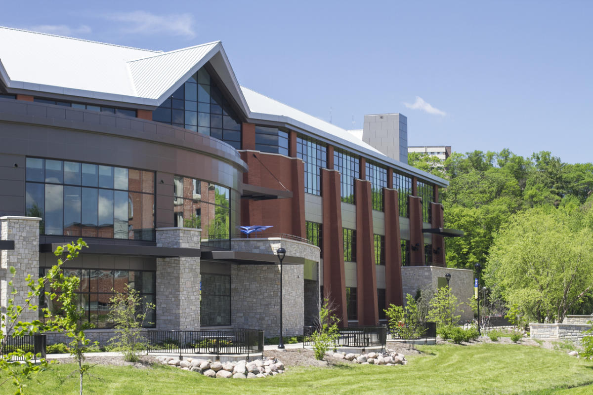
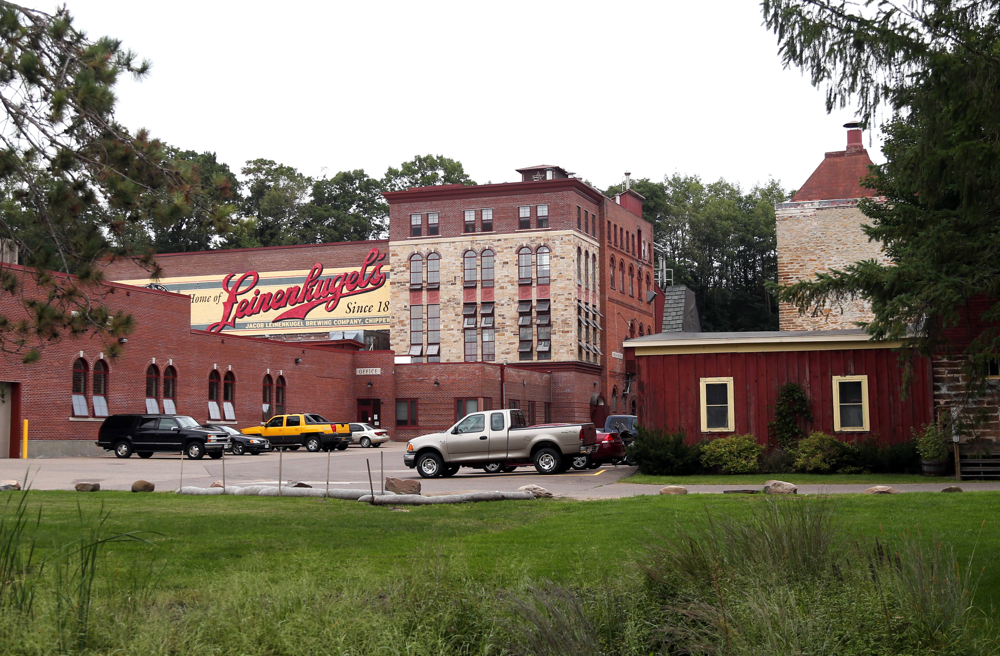
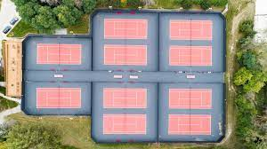
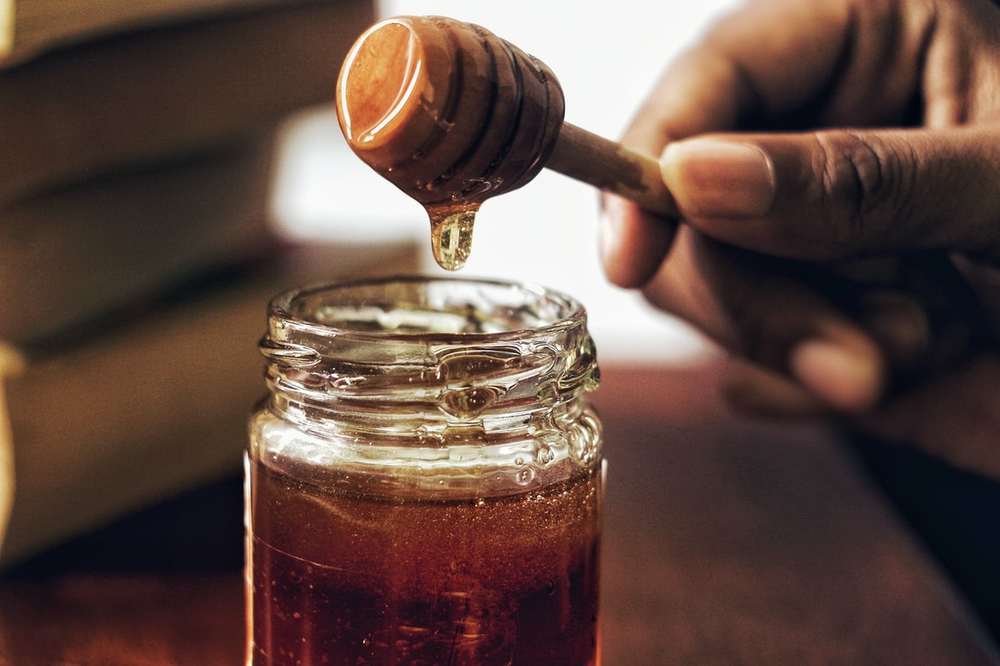
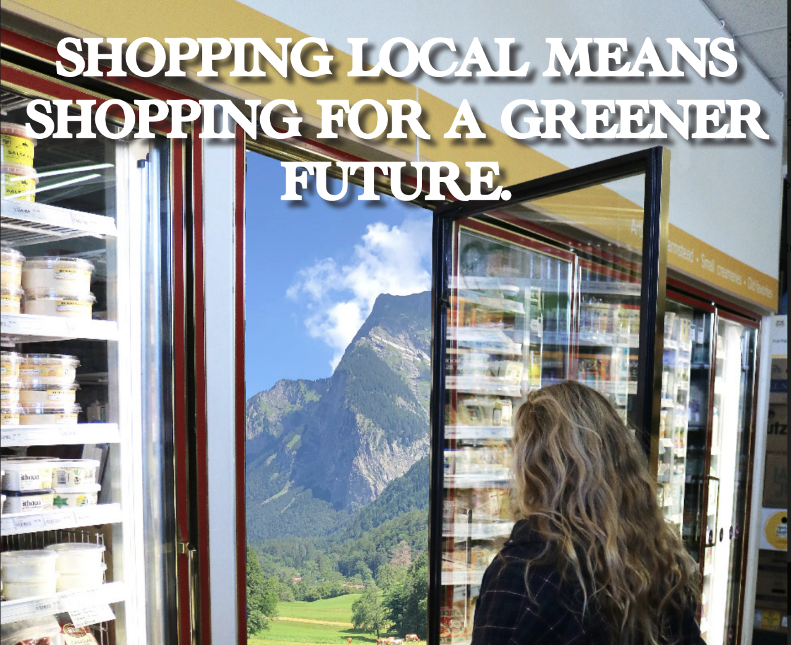
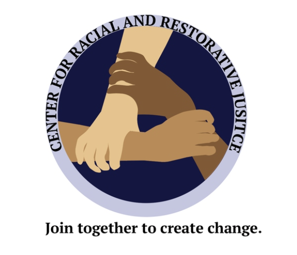

Experience
Work Experience
| Events Intern at The Brewing Projekt | Advertising Manager at UWEC's The Spectator Newspaper |
|---|---|
.jpg)
Assist with preparation, planning, coordination, and execution of 20+ events varying from 20-300 guests. Advance client satisfaction via administration of on-site service requests and logistics management, as well as review of contracts to ensure terms and conditions are acceptable. Organize event space, food and beverage selections, and audio-visual arrangements |

Develop relationships with potential newspaper ad purchasers and partners by making phone calls and visiting businesses. Track and assess newspaper site analytics through SNO Advertising. Collect information, assemble invoices, verify payments, and determine client needs |
| Tour Guide at The Jacob Leinenkugel Brewing Company | Tennis Instructor for Nike Tennis Camps at Carthage College |
|---|---|
|

Memorized a 1-hour long tour script to give tours of the brewery to groups of up to 20 guests to maintain a 4.9 tour guide rating. Assisted Direct to Customer Manager with fulfilling, packaging, and shipping merchandise, as well as taking inventory of various merchandise. Trained new guides to promote better understanding of information to present to guests |

Collaborated with staff and tennis professionals to sustain an active learning environemtn for camp participants aged 7-18 years old. Developed exercise and training programs to meet individual requirements of campers. Encouraged team members to become strong, more active athletes while also building a team atmosphere. |
School Experience
| Multitrack Recording via Adobe Audition | Website Design for Client via Visual Stuido Code |
|---|---|
|
Created a multitrack record through a Audio and Visual Systems class through Adobe Audition and the use of microphones. |

Created a multitrack record through a Audio and Visual Systems class through Adobe Audition and the use of microphones. |
| Environmental Poster via Adobe Photoshop and Adobe InDesign | Logo for CRJC via Adobe Illustrator |
|---|---|
|

Created an environmental poster to motivate individuals to shop locally for a greener future using Adobe Illustrator, Photoshop, and InDesign. |

Created a logo using Adobe Illustrator for the University of Wisconnsin-Eau Claire's Center for Racial and Restorative Justice. |